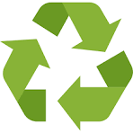
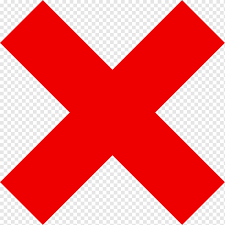
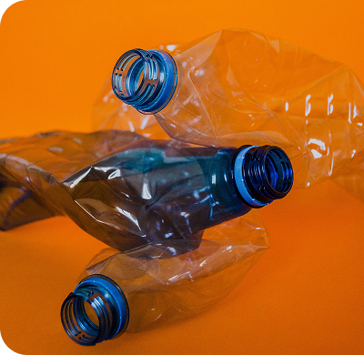
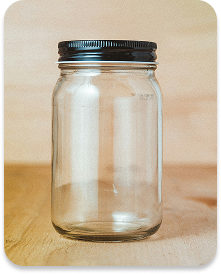
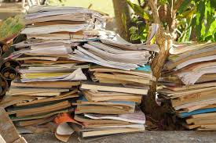
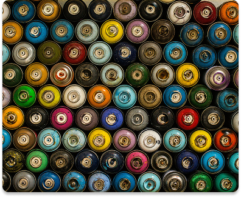
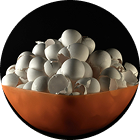
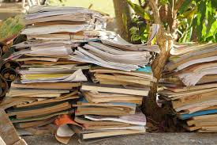
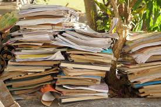

Descartar lixo corretamente é uma atitude essencial para reduzir o impacto ambiental e promover a sustentabilidade. Este guia prático vai te ajudar a entender como separar e reciclar seus resíduos de forma eficaz.
1. Conheça os Tipos de Resíduos e suas Lixeiras Correspondentes
Papel e papelão
Plástico
Vidro
Metal
Resíduos orgânicos
Não recicláveis
2. Como Descartar cada Resíduo
PLÁSTICO
 Plásticos Recicláveis
✅ Garrafas plásticas de refrigerantes, águas minerais, óleos e detergentes
✅ Frascos de shampoo e cosméticos
✅ Sacolas plásticas e sacos de supermercado
 Plásticos Não Recicláveis
🚫 Cabos de panela
🚫 Espumas e isopor
🚫 Esponjas e tomadas plásticas
Dicas para Reciclagem Correta
🔍 Verifique o tipo do plástico
No rótulo da embalagem, procure um número dentro de um triângulo com setas.
Alguns tipos de plástico possuem baixa reciclabilidade.
🛠️ Prepare os materiais antes de descartar
Remova tampas e rótulos colados.
Lave as embalagens para evitar contaminação.
Deixe secar antes de descartar.
📦 Otimize o espaço
Amasse as garrafas plásticas antes de descartá-las.


VIDRO
Vidros Recicláveis
✅ Garrafas (de bebidas, sucos e refrigerantes)
✅ Frascos de cosméticos e potes de vidro (de comida e condimentos)
Vidros Não Recicláveis
🚫 Frascos de remédio
🚫 Espelhos e cerâmicas
🚫 Lâmpadas e óculos
🚫 Vidros temperados (como janelas de carro)
Dicas para Reciclagem Correta
🧼 Lave o vidro para remover resíduos.
📦 Embalagem Segura: Se o vidro estiver quebrado, coloque-o dentro de uma caixa de papelão ou envolva em jornal.
⚠️ Etiqueta de Aviso: Escreva "Cuidado, vidro quebrado" na embalagem para proteger os coletores.
PAPEL
Papeis Recicláveis
✅ Jornais e revistas
✅ Folhas de caderno
✅ Papelão e papel laminado
Papeis Não Recicláveis
🚫 Papel carbono
🚫 Papel higiênico usado
🚫 Papéis engordurados ou plastificados
Dicas para Reciclagem Correta
🧽 Mantenha o papel limpo e seco.
️️✂️ Remova fitas adesivas, grampos e clipes.
📜 Não amasse o papel, dobre-o para facilitar
o processamento.


METAIS
Metais Recicláveis
✅ Latas de alumínio e aço
✅ Fios de cobre, arames e pregos
✅ Canos metálicos
Metais Não Recicláveis
🚫 Latas de tinta e inseticida
🚫 Clipes e esponjas de aço
Dicas para Reciclagem Correta
🧼 Lave os metais antes de descartá-los.
🚮 Remova rótulos e outros materiais não metálicos.
📦 Amasse latas para economizar espaço.
🔗 Não retire o lacre das latas, evitando que ele se perca.
⚠️ Metais afiados: Embale em papelão ou jornal para evitar acidentes.
RESÍDUOS ORGÂNICOS E COMPOSTAGEM
O Que Pode Ir para a Compostagem
✅ Legumes, verduras e cascas de frutas não cítricas
✅ Cascas de ovos e folhas secas
✅ Borra de café
O Que Não Deve Ir para a Compostagem
🚫 Carnes, peixes e laticínios
🚫 Gorduras e óleos
🚫 Frutas cítricas, alho e cebola
🏡 Passo a Passo para Fazer Compostagem em Casa
Escolha um recipiente: Use uma composteira de plástico, madeira ou balde com furos para ventilação.
🍂 Prepare a base: Coloque uma camada de folhas secas, serragem ou papel picado no fundo.
🥕 Adicione os resíduos: Insira restos de alimentos orgânicos (evitando carne, gordura e laticínios).
🔄 Intercale camadas: Sempre cubra os resíduos com mais material seco para evitar mau cheiro.
🌀 Mexa a composteira: Revolva o material a cada poucos dias para acelerar a decomposição.
👀 Acompanhe o processo: Em algumas semanas, o composto começa a se formar.
🌱 Colha o adubo: Após 2 a 3 meses, o composto estará pronto para ser usado em hortas e jardins!

3. Separe os Resíduos Corretamente
Separar os resíduos corretamente facilita e acelera o processo de reciclagem.
Sendo assim, é importante descartar cada resíduo em sua lixeira correspondente.
4. Encontre Pontos de Coleta
A maioria dos materiais citados nesse guia podem ser descartados em Posto de Entrega Voluntário (PEV).
Além dos PEVs, a Prefeitura de Manaus oferece outros programas para Reciclagem, caso queira conhecê-los ou descobrir um PEV perto de você,
clique aqui.
 
